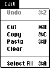
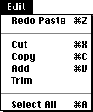

Adding basic QuickTime movie playback support to most applications is simple, often
just one day's work. Developers who want to do this turn first to Inside Macintosh:
QuickTime , where it says to use a movie controller component. In Inside Macintosh:
QuickTime Components, you find some elementary movie controller code samples,
followed by a large reference section. This is usually enough to get started, but there
are a few common problems. This column addresses some of them, with special
attention to compatibility with future QuickTime releases. It assumes you're familiar
with basic QuickTime and movie controller concepts.
OPENMOVIEFILE
All QuickTime movie files contain a movie resource, usually stored in the file's
resource fork, and the actual movie data, stored in the file's data fork. To support
cross-platform QuickTime movies, QuickTime's Movie Toolbox also allows the movie
resource to be stored in the data fork along with the movie's data. (To learn how this
is done, see John Wang's Somewhere in QuickTime column in develop Issue 17.) The
usual sequence of calls to load a QuickTime movie from a file is: OpenMovieFile,
NewMovieFromFile, CloseMovieFile.
In the common case of the movie resource stored in the resource fork, OpenMovieFile
returns a file reference to the resource fork of the movie file, NewMovieFromFile
loads the movie resource from that resource fork and creates a QuickTime movie, and
CloseMovieFile closes the resource fork.
But if the movie was created on a computer running Microsoft Windows and QuickTime
for Windows (using AdobeTM Premiere, for example), the file won't have a resource
fork. Still, you can use the exact same sequence of calls. When OpenMovieFile is called,
the file reference returned refers to the data fork; NewMovieFromFile loads the movie
from the data fork, and CloseMovieFile closes the data fork.
Some developers don't use OpenMovieFile; they use FSpOpenResFile instead. While this
works fine with movies made specifically for the Macintosh, it fails miserably
otherwise. There's a sample movie with no resource fork, QuickBuck, on this issue's
CD, so you can test this situation with your applications.
If you need to know whether OpenMovieFile opened the resource fork or the data fork,
you can examine the file reference it returns, as follows:
pascal Boolean IsDataFork(short fileReference)
{
FCBPBRec anFCB;
Str63 fName;
anFCB.ioVRefNum = 0;
anFCB.ioRefNum = fileReference;
anFCB.ioFCBIndx = 0;
fName[0] = 0;
anFCB.ioNamePtr = (StringPtr)fName;
if (PBGetFCBInfoSync(&anFCB) != noErr)
return false;
return (anFCB.ioFCBFlags & 0x0200) == 0;
}
NEWMOVIECONTROLLER
When you need a user interface for playing a movie, you should use
NewMovieController to create a movie controller appropriate for use with that movie.
A common mistake is to instead use the Component Manager routine
FindNextComponent or OpenDefaultComponent to locate a movie controller. This finds
the first movie controller in the system's list of registered components. QuickTime has
always contained only one movie controller, so this worked fine. However, future
versions of QuickTime will almost certainly include other movie controllers, so the
first one isn't necessarily the most appropriate one.
To help track down those offending applications that don't use NewMovieController,
there's a system extension on this issue's CD which contains a different movie
controller. You'll also find a movie, Other Controller Movie, that should invoke the
sample movie controller. If any other movie invokes the sample movie controller, or
if Other Controller Movie invokes the standard movie controller, the application
you're testing isn't using NewMovieController. This will cause undesirable results in
the not-so-distant future.
UPDATE EVENTS
If you use a movie controller in the recommended way (that is, you allow all events to
be filtered through MCIsPlayerEvent), it updates all areas of the window covered by
the movie and the movie's controls. Usually that's all a window contains, so all update
events are completely handled by the movie controller. This works so well that some
developers actually forget to support update events at all.
Unfortunately, it's not always so simple. QuickTime movies aren't always rectangular.
If the movie is round and the window is rectangular (as in Figure 1), there are areas
in the window that are not covered by the movie or the movie controls. Any update
events in these areas are the responsibility of the application.
Figure 1. A nonrectangular movie
For applications using MCIsPlayerEvent, handling update events is easy:
BeginUpdate(theWindow); EraseRect(&theWindow->portRect); EndUpdate(theWindow);
This sample code erases all areas of the window besides the movie and its controls.
Normally, erasing the portRect of the window would erase the entire window, but
MCIsPlayerEvent sets the update region to just the areas it didn't already handle.
If you don't handle update events, things are even worse than you might think. The
window won't be updated correctly, but more important, the operating system will
keep generating new update events. Update events have a higher priority than idle
events, so the system will never generate idle events -- the movie will receive no
time to play.
A sample round movie is provided on this issue's CD so that you can test your handling
of update events.
KEYSTROKES
The standard movie controller provides for extensive keyboard control from the user
but ignores keystrokes by default. They can be enabled with a single line of code:
MCDoAction(mc, mcActionSetKeysEnabled, (void *)true);
You might want to enable keystrokes only under certain circumstances. For example, a
word processor might allow the movie controller to receive keystrokes only when a
movie is selected. You can use the mcActionSetKeysEnabled action to enable and disable
keystrokes as necessary.
MOUSE CLICKS
All applications that use the standard movie controller pass mouse clicks on to the
controller. But not all applications pass mouse clicks made on the movie itself. Failure
to pass such clicks will cause problems with any future movie controllers that allow
the user to interact directly with the contents of the movie. For example, a movie
controller might allow the user to pan around the image by dragging on the movie; if
mouse clicks aren't passed through, using either MCClick or MCIsPlayerEvent, this
feature won't work.
MOVIE CONTROLLER HELP
The standard Apple movie controller is simple enough for most people to understand
immediately, but it supports help balloons anyway (future movie controllers might be
less obvious). If Balloon Help is turned on, the standard movie controller
automatically displays help for its various controls, as well as for the QuickTime
movie itself. You don't have to do anything at all for this to work.
A problem can arise if your application puts up its own help balloons. Since QuickTime
movies are often embedded in a larger document, the help balloons may conflict. The
result is that the movie controller's help balloon alternates with the application's help
balloon. (Use Balloon Help with the Scrapbook desk accessory included with QuickTime
to see what this looks like.)
The preferred solution is to stop the application from displaying a help balloon when
the cursor is over a QuickTime movie or movie control. It's easy to tell whether a
given point in a window intersects the movie:
Boolean PointInMovieController(MovieController
mc, WindowPtr w, Point where)
{
RgnHandle rgn;
Boolean result = false;
rgn = MCGetWindowRgn(mc, w);
if (rgn != nil) {
result = PtInRgn(where, rgn);
DisposeRgn(rgn);
}
return result;
}
A second solution is to stop the movie controller from displaying its help balloons --
necessary if you want to display your own help for QuickTime movies. To do this,
install an action filter on the movie controller. Every action that occurs in the movie
controller (play, step, update, key down, and so on) is passed through a single filter
function. Through this filter, an application can gain access to all activity that occurs
in the movie controller.
The MegaMovies application on this issue's CD provides a window that displays events
that pass through the action filter. The action of interest is mcActionShowBalloon.
When this action is sent, QuickTime is about to put up a new help balloon. One of the
parameters passed to the action filter is a pointer to a Boolean. The filter can set this
Boolean to false to tell the movie controller not to show a balloon. The following code
fragments show how to install a simple action filter to prevent the movie controller
from displaying help balloons.
pascal Boolean noBalloonsActionFilter
(MovieController mc, short action,
void *params, long refCon)
{
if (action == mcActionShowBalloon)
*(Boolean *)params = false;
return false;
}
. . .
MCSetActionFilterWithRefCon(mc,
&noBalloonsActionFilter, 0);
CURSOR SHAPE
Many applications change the shape of the cursor depending on what it's currently
over. The standard movie controller never changes the cursor, but other movie
controllers might want to. Unfortunately, many applications need to control the cursor
themselves -- when a movie controller changes the cursor, these applications change
it back immediately.
A simple solution is for applications to change the cursor only when it's first placed
over a movie. (To determine whether a point is over the movie, use
PointInMovieController.) After that, let the movie controller control the cursor until
it exits the area over the movie. To give the movie controller the opportunity to
change the cursor's shape, you must call either MCIsPlayerEvent or MCIdle frequently
while the cursor is over the movie, even if the movie is stopped. The sample movie
controller on this issue's CD changes the cursor when it's over the movie, providing an
easy way to debug such a scheme.
WINDOW ALIGNMENT
A simple way to improve a QuickTime movie's playback performance is to ensure that
the movie is at a good location on the screen. The exact definition of a "good location"
varies, based on the screen depth and the processor. A typical good location is one
where the first pixel of each scan line begins on a long-word boundary. This allows the
decompressors to write data in the most efficientway. On slower machines, proper
placement can provide the necessary performance improvement to deliver smooth
playback.
Fortunately, applications don't have to understand the details of how to find a good
location. QuickTime's Image Compression Manager provides routines to position a
window at these locations. When you create a window, you can use AlignWindow to
move it to a good location before making it visible. If a window is to be moved,
AlignScreenRect will modify the chosen location to make it a good location. When the
user drags a window, call DragAlignedWindow instead of DragWindow to place the
window in a good location. Examples of these calls are shown below.
WindowPtr w; Movie m; Rect r; // Code to create a properly aligned window. w = GetNewCWindow(128, nil, (WindowPtr)-1); m = getMovie(); GetMovieBox(m, &r); AlignWindow(w, false, &r, nil); // Code to drag a window with a movie in it and // keep the window aligned properly. GetMovieBox(m, &r); DragAlignedWindow(w, theEvent.where, nil, &r, nil);
These alignment routines were added in QuickTime 1.5, so make sure that QuickTime
1.5 or later is installed before you call them.
MOVIE CONTROLLER EDITING
The standard movie controller supports the editing commands Undo, Cut, Copy, Paste,
and Clear, but this functionality is turned off by default. To turn it on, call
MCEnableEditing as follows:
MCEnableEditing(mc, true);
You can then use movie controller routines to implement editing:
Movie m = nil;
switch (editMenuSelection) {
case menuUndo: MCUndo(mc);
break;
case menuCut: m = MCCut(mc);
break;
case menuCopy: m = MCCopy(mc);
break;
case menuPaste: MCPaste(mc, nil);
Now you have to enable and disable the various menu items. You could call
MCGetControllerInfo, which returns a long word of flags indicating, among other
things, which Edit menu items should be enabled.With QuickTime 1.5, there's an
easier way: call MCSetUpEditMenu, and the movie controller will enable and disable
the items in the Edit menu for you.
MCSetUpEditMenu(mc, theEvent.modifiers, editMenuHandle);

Standard

Modified
This routine will even change the menu contents if appropriate. For example, Undo
becomes Undo Paste if the last movie controller action was Paste; after Undo Paste is
chosen, it becomes Redo Paste. What's more, if the user holds down modifier keys when
pulling down a menu, other commands change as well. For example, holding down the
Option key changes Paste to Add and Clear to Trim. (See Figure 2.)
Figure 2. Standard and modified Edit menus
MCSetUpEditMenu assumes the Edit menu is arranged in the standard way. If yours is
nonstandard, you'll need to use MCGetMenuString to obtain the appropriate text for
each standard Edit command, and then enable and disable the menu items according to
the information from MCGetControllerInfo.
JUST DO IT
It's so easy to add movie playback support that it's often well worth the effort. As long
as you keep these few simple things in mind, you shouldn't have any problems, even
with future versions of QuickTime.
PETER HODDIE writes code to introduce hard-to-find bugs into QuickTime. In his
spare time he writes code to introduce even harder-to-find bugs into QuickTime. *
Thanks to Jim Batson, Ken Doyle, and John Wang for reviewing this column. *